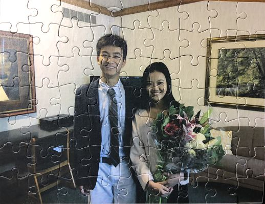
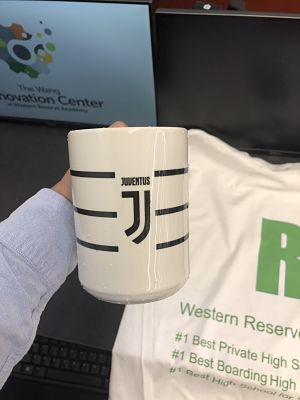

Group Design Challenge
This week I learned three fun skills: how to print a shirt, how to sublimate, and how to use UV printer.
I printed the picture of my homecoming date and I in a puzzle. I gave it to her as an extra gift.
Puzzle

For the sublimation, I made a mug with Juventus logo on it. It's one of my favarioute products so far.
It looks very cool, not only cool to look, but also cool to use.
Cup

For printing shirt, we were not allowed to use any image online that has copyright, because this shirt was for commercial competition.
Sadly, I made a mistake in printing the first line, stating that WRA is the best private school in Ohio.
Shirt

Back to index